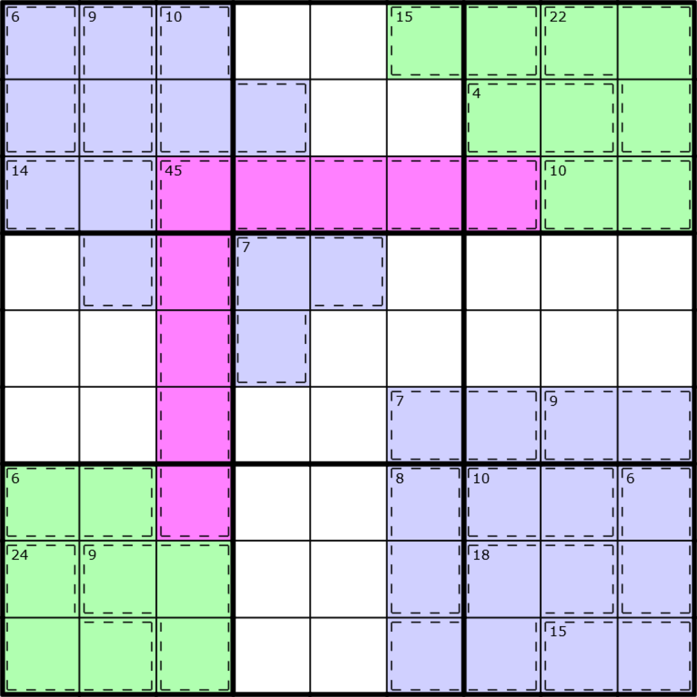
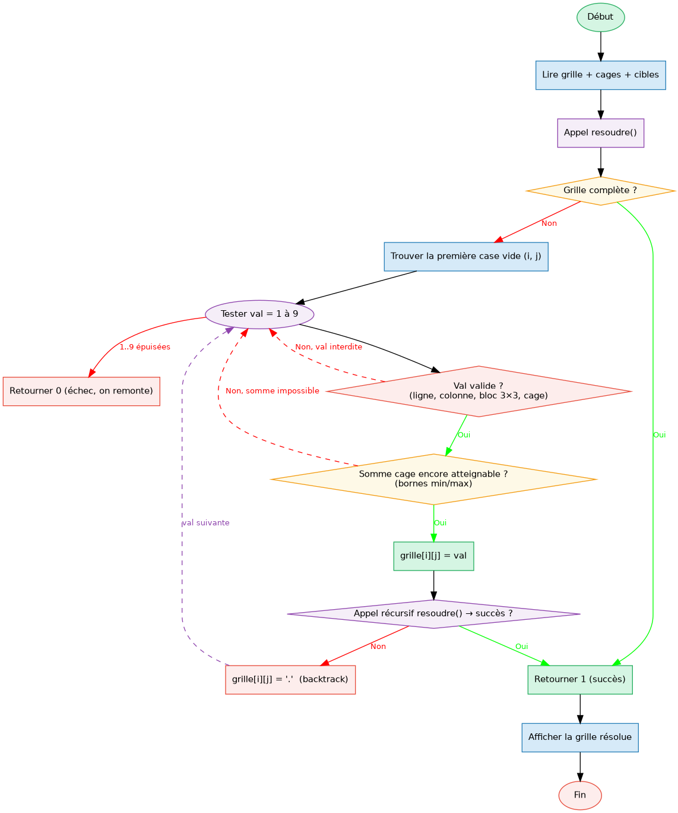

Rapport - Killer Sudoku
Table des matières

1. Introduction
Le Killer Sudoku est une variante du Sudoku classique. La différence principale, c’est qu’il y a des cages qui sont ,des groupes de cases dont les valeurs doivent sommer à une cible donnée, sans répéter de chiffre dans la cage.
Il y a quatres règles à respecter en même temps :
- Ligne : chaque ligne contient les chiffres de 1 à 9 sans répétition.
- Colonne : chaque colonne contient les chiffres de 1 à 9 sans répétition.
- Région : chaque carré 3×3 contient les chiffres de 1 à 9 sans répétition.
- Cage : les cases d’une même cage doivent sommer exactement à la valeur cible, sans répétition interne.
En entrée on a une grille 9×9 pas entièrement remplies, une grille d’identifiants de
cages (lettres a=–=z et A=–=Z), et les sommes cibles de chaque cage. En sortie
on doit afficher la grille complète et résolue.
Pour résoudre ce problème j’ai utilisé du backtracking.
2. Analyse du problème
En entrée, chaque ligne contient deux mots séparés par un espace : le premier
représente une ligne de la grille (. pour les cases vides, un chiffre pour les
cases déjà remplies), et le deuxième donne l’identifiant de cage pour chacune des
9 cases de cette ligne. La dixième et dernière ligne liste les sommes cibles sous
la forme id=valeur.
56..1..2. aabbccdde ..72..68. afghhiide ..2.87.15 jfggklmme ......3.9 jjgnklopp .7....2.. qqgnooorr 9.634.8.. stuuvwwxx 2.9..8... stuuvvwyz ..41.2... sAuuByyyz .8.4...3. CADDBEEFF a=12 b=17 c=4 d=14 e=15 f=13 g=19 h=7 i=10 j=16 k=10 l=13 m=10 n=15 o=15 p=13 q=11 r=11 s=18 t=3 u=28 v=15 w=20 x=8 y=22 z=12 A=11 B=13 C=6 D=9 E=10 F=5
Une cage peut avoir n’importe quelle forme et aller sur plusieurs lignes. Pour stocker les infos de chaque cage j’utilise deux tableaux de taille 256 indexés directement par le code ASCII de la lettre, ce qui évite d’avoir une fonction de conversion.
Le vrai problème avec ce puzzle c’est la performance car il y a énormément de combinaisons possibles, et un backtracking qui teste tout bêtement va dépasser le temps limite.L’idée c’est de détecter des que l’on peut qu’une branche ne peut pas marcher, pour ne pas aller plus loin inutilement.
3. Méthode de résolution
Pour résoudre la grille j’utilise du backtracking récursif : on essaie des valeurs case par case, et si on se retrouve bloqué on revient en arrière pour tenter autre chose.
Pour que ça reste suffisamment rapide, on essaie de détecter les mauvaises pistes le plus tôt possible afin de ne pas explorer des branches inutiles.
Les vérifications classiques du sudoku (ligne, colonne, bloc 3×3) sont faites avec des fonctions dédiées qui parcourent simplement la grille.
Pour savoir si val est jouable en (i, j), on appelle les quatre fonctions et on rejette la valeur dès que l’une d’elles retourne 1 :
si est_dans_ligne(grille, i, val) // on rejette val si est_dans_colonne(grille, j, val) // on rejette val si est_dans_bloc(grille, i, j, val) // on rejette val si est_dans_cage(grille, cages, lettre, val) // on rejette val
On ajoute une vérification supplémentaire via la fonction compatible_avec_cage. À chaque fois qu’on essaie une valeur val dans une cage, on recalcule la somme déjà posée et le nombre de cases qu’il reste à remplir.
Si c’est la dernière case de la cage, la somme doit tomber exactement sur la cible. Sinon, on vérifie que ce qu’il reste à atteindre est encore possible avec les cases restantes, en encadrant la somme restante entre un minimum et un maximum :
somme_min = k*(k+1)/2 somme_max = k*(19-k)/2 avec k = cases_restantes
Si somme_restante sort de cet intervalle, on rejette la valeur immédiatement sans aller plus loin.
4. Algorithme
Le diagramme ci-dessous illustre le fonctionnement global du programme (gauche)
et le détail de la fonction récursive resoudre() (droite).

Le principe : à chaque case vide, on teste les valeurs 1 à 9 en vérifiant d’abord
les contraintes sudoku classiques puis la compatibilité avec la cage. Si la récursion
échoue, on remet le ’.’ et on essaie la valeur suivante. Si aucune valeur ne marche,
on retourne 0 pour remonter au niveau au-dessus.
5. Code commenté
#include <stdlib.h> #include <stdio.h> #include <string.h> #define N 10 // Affiche les 9 lignes de la grille void afficher_grille(char grille[N][N]) { int i; for (i = 0; i < N - 1; i++) printf("%s\n", grille[i]); } // Remplit cibles[lettre] = somme cible de la cage // ex : "a=14 b=7" → cibles['a']=14, cibles['b']=7 void lire_cibles_cages(char ligne[251], int cibles[256]) { int i = 0; char lettre; int valeur; while (ligne[i] != '\0') { if ((ligne[i] >= 'a' && ligne[i] <= 'z') || (ligne[i] >= 'A' && ligne[i] <= 'Z')) { lettre = ligne[i]; i += 2; // saute le '=' valeur = 0; // lit les chiffres de la valeur un par un while (ligne[i] >= '0' && ligne[i] <= '9') { valeur = valeur * 10 + (ligne[i] - '0'); i++; } cibles[(int)lettre] = valeur; } else { i++; } } } // Renvoie 1 si val est déjà dans la ligne, 0 sinon int est_dans_ligne(char grille[N][N], int ligne, int valeur) { int j; for (j = 0; j < N - 1; j++) if (grille[ligne][j] == valeur + '0') return 1; return 0; } // Renvoie 1 si val est déjà dans la colonne, 0 sinon int est_dans_colonne(char grille[N][N], int colonne, int valeur) { int i; for (i = 0; i < N - 1; i++) if (grille[i][colonne] == valeur + '0') return 1; return 0; } // Renvoie 1 si val est déjà dans le bloc 3x3, 0 sinon int est_dans_bloc(char grille[N][N], int ligne, int col, int valeur) { int debut_ligne = (ligne / 3) * 3; int debut_col = (col / 3) * 3; int i, j; for (i = 0; i < 3; i++) for (j = 0; j < 3; j++) if (grille[debut_ligne + i][debut_col + j] == valeur + '0') return 1; return 0; } // Calcule la somme des cases déjà remplies dans une cage int somme_remplie_cage(char grille[N][N], char cages[N][N], char lettre) { int somme = 0; int i, j; for (i = 0; i < N - 1; i++) for (j = 0; j < N - 1; j++) if (cages[i][j] == lettre && grille[i][j] != '.') somme += grille[i][j] - '0'; return somme; } // Compte le nombre de cases encore vides dans une cage int cases_vides_cage(char grille[N][N], char cages[N][N], char lettre) { int nb = 0; int i, j; for (i = 0; i < N - 1; i++) for (j = 0; j < N - 1; j++) if (cages[i][j] == lettre && grille[i][j] == '.') nb++; return nb; } // Renvoie 1 si val est déjà utilisée dans la cage, 0 sinon int est_dans_cage(char grille[N][N], char cages[N][N], char lettre, int valeur) { int i, j; for (i = 0; i < N - 1; i++) for (j = 0; j < N - 1; j++) if (cages[i][j] == lettre && grille[i][j] == valeur + '0') return 1; return 0; } // Vérifie que placer valeur ici ne rend pas la somme cible inatteignable // dernière case : somme doit être exacte // sinon : somme restante doit rester dans [min, max] atteignable int compatible_avec_cage(char grille[N][N], char cages[N][N], int cibles[256], int ligne, int col, int valeur) { char lettre = cages[ligne][col]; int cible = cibles[(int)lettre]; int nouvelle_somme = somme_remplie_cage(grille, cages, lettre) + valeur; int cases_apres = cases_vides_cage(grille, cages, lettre) - 1; // Dernière case : la somme doit tomber exactement sur la cible if (cases_apres == 0) return (nouvelle_somme == cible); // Vérifie que la somme restante est encore atteignable int somme_restante = cible - nouvelle_somme; int somme_min = cases_apres * (cases_apres + 1) / 2; // 1+2+...+k int somme_max = cases_apres * (19 - cases_apres) / 2; // 9+8+...+(9-k+1) return (somme_restante >= somme_min && somme_restante <= somme_max); } // Renvoie 1 si toutes les cases sont remplies (plus de '.') int grille_complete(char grille[N][N]) { int i, j; for (i = 0; i < N - 1; i++) for (j = 0; j < N - 1; j++) if (grille[i][j] == '.') return 0; return 1; } // Fonction principale de résolution par backtracking // on prend la première case vide, on teste les valeurs 1-9 // si aucune ne marche, on retourne 0 pour remonter int resoudre(char grille[N][N], char cages[N][N], int cibles[256]) { int i, j, v; if (grille_complete(grille)) return 1; // Chercher la première case vide for (i = 0; i < N - 1; i++) { for (j = 0; j < N - 1; j++) { if (grille[i][j] == '.') { // Tester les valeurs 1 à 9 for (v = 1; v <= 9; v++) { // Toutes les contraintes doivent être respectées if (!est_dans_ligne(grille, i, v) && !est_dans_colonne(grille, j, v) && !est_dans_bloc(grille, i, j, v) && !est_dans_cage(grille, cages, cages[i][j], v) && compatible_avec_cage(grille, cages, cibles, i, j, v)) { grille[i][j] = v + '0'; // on pose la valeur if (resoudre(grille, cages, cibles)) return 1; grille[i][j] = '.'; // backtrack : on annule } } // Aucune valeur ne convient, on remonte return 0; } } } return 1; } int main() { char grille[N][N]; char cages[N][N]; int cibles[256]; int i; // Lecture des 9 lignes : grille et cages côte à côte for (i = 0; i < N - 1; i++) { scanf("%s%s", grille[i], cages[i]); fgetc(stdin); } // Lecture et parsing de la dernière ligne : "a=12 b=17 ..." char ligne_cibles[251] = ""; scanf("%[^\n]", ligne_cibles); lire_cibles_cages(ligne_cibles, cibles); resoudre(grille, cages, cibles); afficher_grille(grille); return 0; }
6. Résultats
6.1. Exemple d’exécution
Avec la grille de l’énoncé en entrée :
56..1..2. aabbccdde ..72..68. afghhiide ..2.87.15 jfggklmme ......3.9 jjgnklopp .7....2.. qqgnooorr 9.634.8.. stuuvwwxx 2.9..8... stuuvvwyz ..41.2... sAuuByyyz .8.4...3. CADDBEEFF a=12 b=17 c=4 d=14 e=15 f=13 g=19 h=7 i=10 j=16 k=10 l=13 m=10 n=15 o=15 p=13 q=11 r=11 s=18 t=3 u=28 v=15 w=20 x=8 y=22 z=12 A=11 B=13 C=6 D=9 E=10 F=5
Le programme produit en sortie :
568913427 197254683 342687915 851726349 473891256 926345871 219538764 734162598 685479132
7. Solution alternative - Carl Wash
#include <stdlib.h> #include <stdio.h> #include <stdbool.h> typedef struct { char val; char id; } cell; typedef struct { char *cells[9]; char len; char sum; } cage; cell grid[9][9]; cage cages[256]; bool place(int y, int x, int n) { for (int yy = 0; yy < 9; ++yy) if (grid[yy][x].val == n) return false; for (int xx = 0; xx < 9; ++xx) if (grid[y][xx].val == n) return false; for (int yy = 0; yy < 3; ++yy) for (int xx = 0; xx < 3; ++xx) if (grid[yy + y - y%3][xx + x - x%3].val == n) return false; grid[y][x].val = n; cage *cg = &cages[grid[y][x].id]; int sum = 0; for (int i = 0; i < cg->len; ++i) { int n = *cg->cells[i]; if (!n) return true; sum += n; } return sum == cg->sum; } void brute(int y, int x) { if (y == 9) { for (y = 0; y < 9; ++y) { for (x = 0; x < 9; ++x) printf("%d", grid[y][x].val); printf("\n"); } exit(0); } if (x == 9) return brute(y+1, 0); if (grid[y][x].val) return brute(y, x+1); // HACK: naive recursion is too slow when iterating 1..9, so guess in reverse...? for (int n = 9; n >= 1; --n) if (place(y, x, n)) brute(y, x+1); grid[y][x].val = 0; } int main() { for (int y = 0; y < 9; y++) { char nums[10], ids[10]; scanf("%s%s", nums, ids); fgetc(stdin); for (int x = 0; x < 9; x++) { if (nums[x] != '.') grid[y][x].val = nums[x] - '0'; grid[y][x].id = ids[x]; cage *cg = &cages[ids[x]]; cg->cells[cg->len++] = &grid[y][x].val; } } char c; int n; while ((scanf(" %c=%d", &c, &n)) == 2) cages[c].sum = n; brute(0, 0); return 1; }
Le code est plus court que le mien et utilise deux typedef struct pour organiser
les données. Les cages sont indexées directement avec le code ASCII de la lettre comme indice dans un tableau de taille 256,
pareil que moi du coup sur ce point. Ce que j’ai trouvé le plus interessant c’est
la gestion de la contrainte de cage qui n’est vérifiée que quand toutes les cases
sont remplies. Tant qu’une case vaut 0, la fonction retourne true directement sans
regarder la somme. C’est beaucoup plus simple à coder mais on détecte les mauvaises
combinaisons beaucoup plus tard que dans ma solution, ce qui explique pourquoi c’est
plus lent en théorie.
Il y a aussi un commentaire dans le code qui m’a bien fait rire :
// HACK: naive recursion is too slow when iterating 1..9, so guess in reverse...?
Il teste les valeurs de 9 à 1 au lieu de 1 à 9, et apparement ça suffit à passer dans les temps (même lui sait pas trop pourquoi ça marche mieux dans ce sens).
8. Bilan
Ce puzzle était assez complexe, surtout la partie performances. Ma première version plantait sur les grilles difficiles parce que je n’avais pas encore optimisé le backtracking. Ensuite j’ai essayé de faire quelque chose de propre et lisible, avec des fonctions bien séparées qui font chacune une seule chose(plus facile à débugger.) Comparer avec la solution de Carl Wash m’a montré qu’utiliser des struct et des pointeurs permet d’otpimiser le programme, ce que je n’avais pas penser a utiliser.